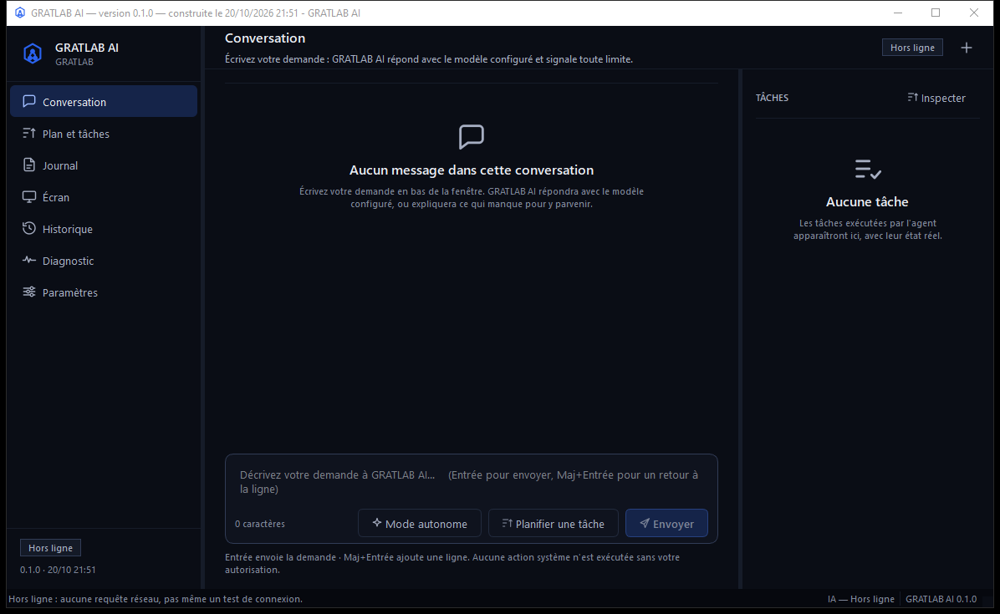

Un assistant IA sur votre PC, avec le fournisseur que vous choisissez.
Application Windows autonome : conversation, mémoire locale, capture d'écran sur action explicite et diagnostic réel des fournisseurs. Aucune requête n'est envoyée sans votre demande.
Windows 10/11 64 bits · archive ZIP · aucune installation · aucune clé API incluse

Ce que fait l'application
Chaque fonction ci-dessous existe réellement dans cette version. Les limites sont indiquées plus bas, sans formulation publicitaire.
Conversation avec votre modèle
Gemini, Groq, OpenRouter ou Ollama en local. Le modèle configuré est affiché ; il n'est jamais changé sans votre action.
Chaîne de repli explicite
Si un fournisseur échoue, le suivant est essayé. L'échec est affiché tel quel, avec le détail derrière « Voir les détails ».
Mémoire et historique locaux
Conversations et journal conservés dans un dossier local (SQLite). Rien n'est synchronisé dans le cloud par l'application.
Capture d'écran sur action
La capture n'a lieu qu'après une demande explicite et une confirmation. Aucune capture silencieuse.
Diagnostic vérifiable
Capacités détectées, clé présente ou absente, test réel des fournisseurs. Un fournisseur n'est déclaré opérationnel qu'après un test réussi.
Clé hors des fichiers
La clé API est lue dans une variable d'environnement utilisateur. Elle n'est ni dans l'archive, ni dans la configuration, ni dans les journaux.
Ce qui est vérifié, et ce qui ne l'est pas
État réel au 20/10/2026 21:51. Les points non vérifiés sont signalés comme tels.
| Point | État |
|---|---|
| Suite de tests automatisés | 551 tests passés (1 écarté : écran de test trop petit) |
| Démarrage à chaud (splash puis fenêtre) | 2–3 s puis 5–7 s mesurés sur la machine de référence |
| Démarrage après longue inactivité | 12–30 s — disque dur 5400 tr/min, non corrigeable dans le code |
| Absence de clé dans les fichiers livrés | Vérifiée dans l'archive et les journaux |
| Parcours complet de chaque page | Non vérifié — pas d'accès visuel automatisé à l'interface |
| Ollama en local | Non testé sur cette machine — service non installé |
Installation
-
Télécharger et décompresser
Le fichier ZIP contient le dossier
GRATLAB-AI. Windows peut demander une confirmation : l'application n'est pas signée par un certificat commercial. -
Lancer
GRATLAB-AI.exeAucune installation, aucun droit administrateur. L'écran de premier lancement propose de configurer un fournisseur ou de continuer plus tard.
-
Configurer une clé, ou utiliser Ollama
La clé se déclare dans Paramètres et reste dans votre profil Windows. Sans clé, l'application le dit clairement au lieu d'inventer une réponse.
Vérifier le fichier téléchargé
Comparez l'empreinte SHA-256 du ZIP avec celle-ci. Toute différence signifie que le fichier a été modifié.
BC11F65609128B05577F1F4F2D9D723832673AAE2DC8FD3B5B38ECCFF8F7312CSous Windows : Get-FileHash .\GRATLAB-AI-0.1.0-win64-20261020.zip -Algorithm SHA256
Limites connues
Windows uniquement
Application de bureau Windows 64 bits. Il n'existe pas de version web ni mobile.
Pas de mise à jour automatique
Une nouvelle version se télécharge et remplace le dossier. Aucun service en arrière-plan.
Licence à définir
Logiciel propriétaire. Les conditions d'utilisation ne sont pas encore publiées ; ne le redistribuez pas sans accord.
Ollama non fourni
Le mode local suppose qu'Ollama est déjà installé et démarré. L'application ne télécharge rien à votre place.